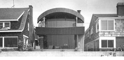
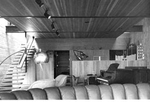

|
Bay Front Residence, Southern California, 1978-1980 GA
Houses 18 |
This house has an open facade facing south with a view on a bay. On the side lines concrete walls were used to provide for privacy and noise reduction. Along these walls in the roof skylights were placed to illuminate and ventilate the interior of the house. The second floor steps in from the side walls so daylight can reach the first floor as can be seen on the right photograph. Because the ceiling hangs free from the walls the second floor gives a very lightweight impression. The left opening is also used as circulation-area. |
 |